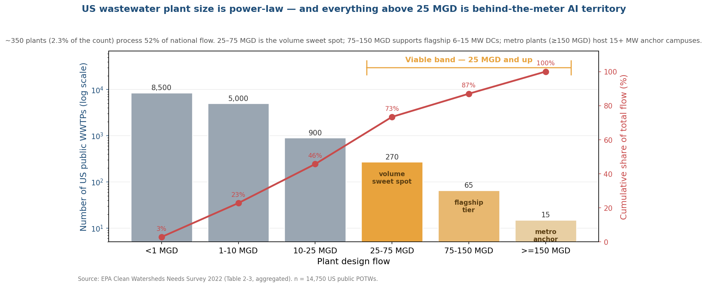
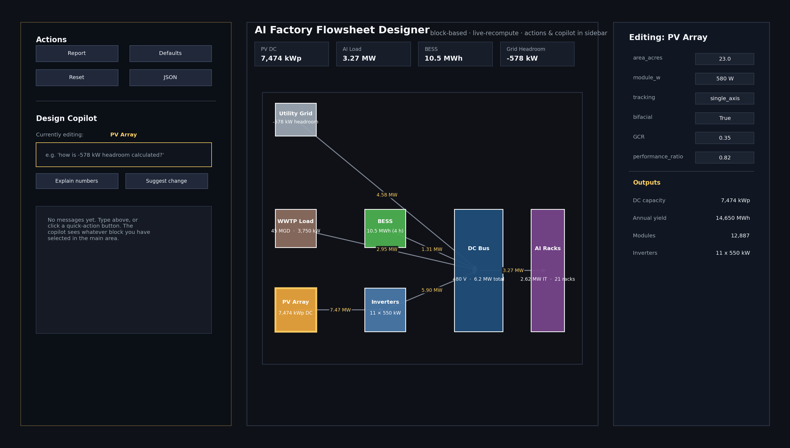
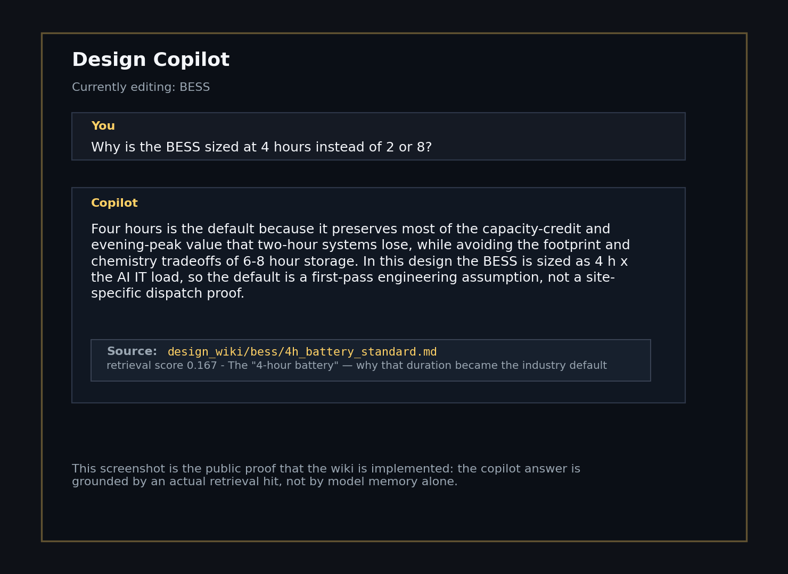
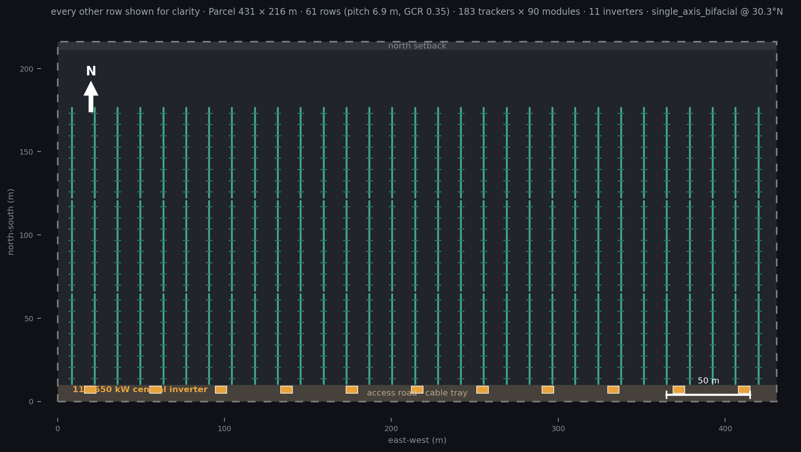
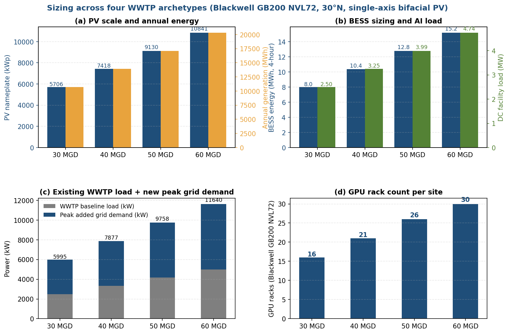
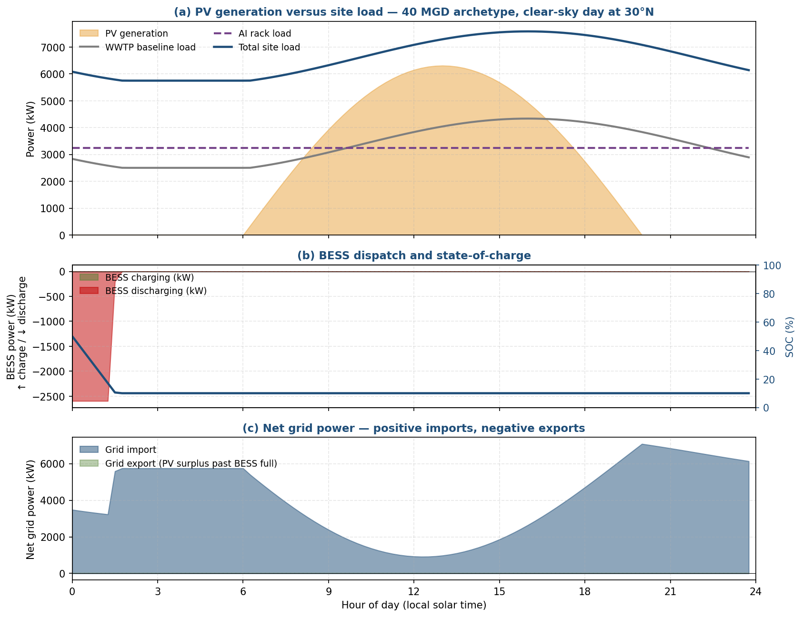
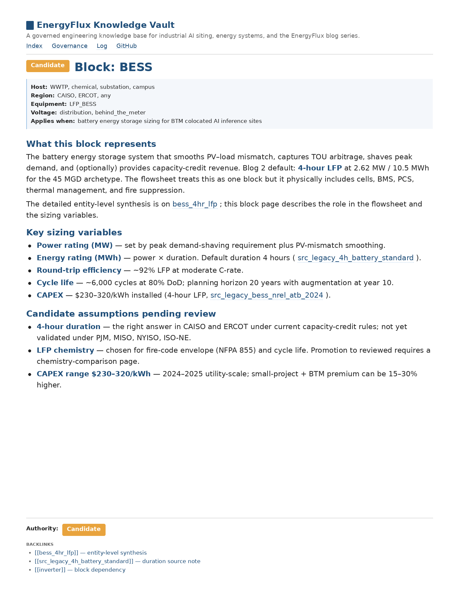
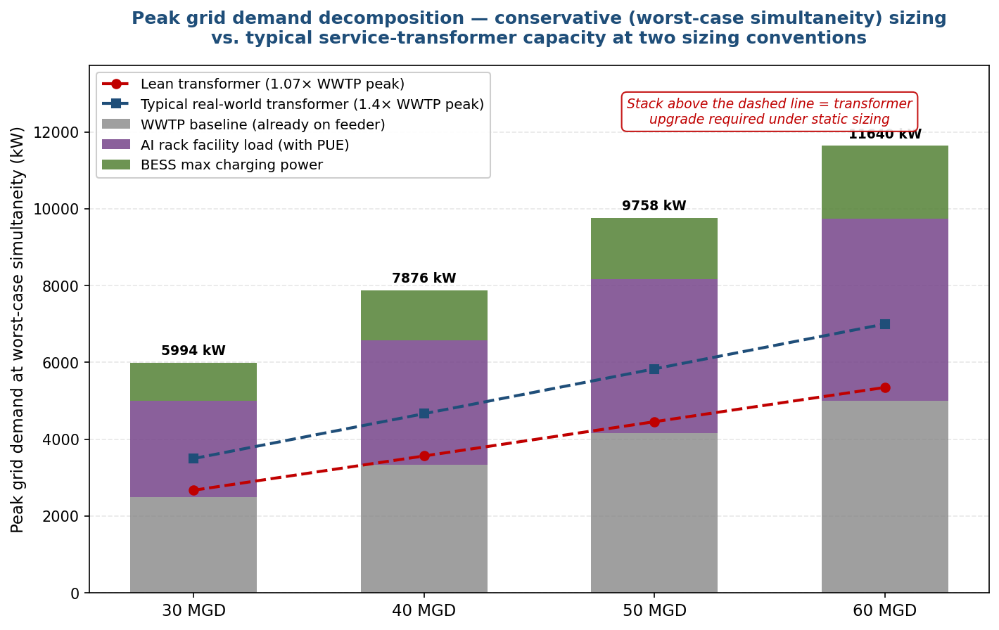
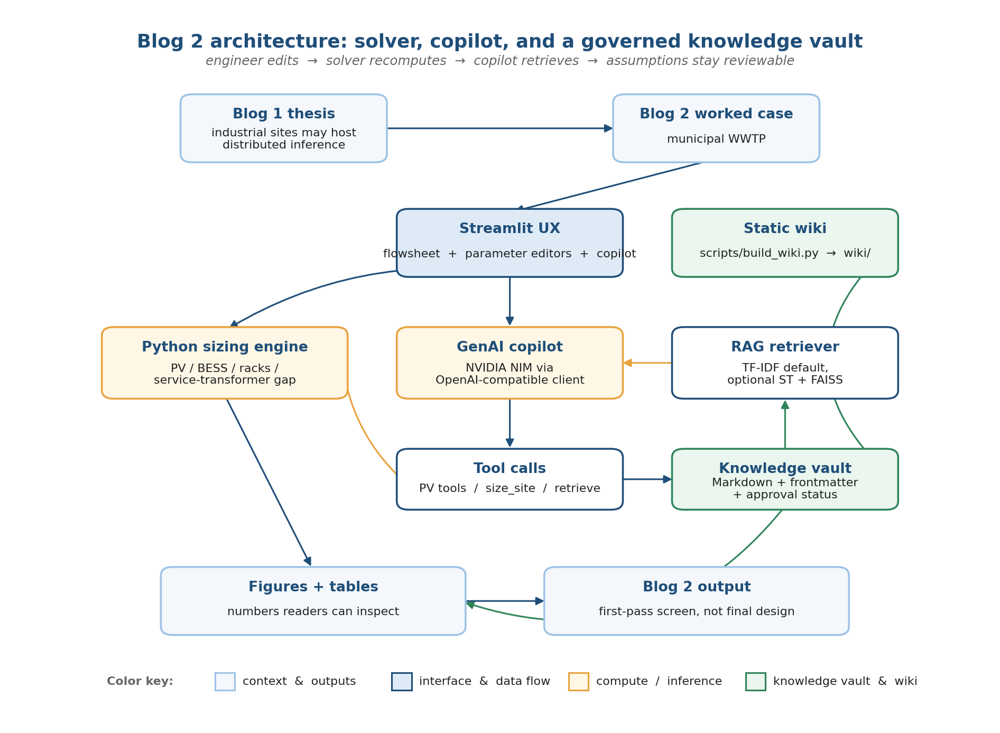

Part 2: GenAI-assisted behind-the-meter design, grounded in a knowledge base governed by engineers.
Blog 1 proposed that some existing industrial sites already carry industrial land, megawatt-class service, and process water on the same parcel, which could shorten the path to distributed AI inference. To test that proposal, this post picks one specific host class, mid-size municipal wastewater plants, and walks one sizing case end to end. The wastewater plant is the worked example here. What carries across to other host classes is the design loop itself — a flowsheet you click on, a sizing engine that recomputes, and a copilot that retrieves from a knowledge base where every cited assumption carries an approval status.
Industrial system-level design has always combined domain solvers with field judgment. Across process plants, wastewater systems, electrical networks, renewable-energy studies, building/data-center energy models, and multidomain controls, the same split shows up: mature solvers on one side, and project judgment around assumptions, constraints, and operating history on the other.
Table 1. Representative system-level engineering simulation tool families. Illustrative, not exhaustive.
| Domain | Representative tools |
|---|---|
| Process / chemical / refining flowsheets | Aspen Plus, Aspen HYSYS, AVEVA Process Simulation, KBC Petro-SIM; IDAES / Pyomo |
| Wastewater / water / hydraulics | BioWin, GPS-X, WEST, SWMM, EPANET, WaterCAD, InfoWorks ICM |
| Electrical power systems | ETAP, SKM PowerTools, PSS/E, PSCAD, DIgSILENT PowerFactory |
| Renewable / hybrid energy screening | NREL SAM, HOMER, PVsyst; pvlib, windpowerlib |
| Building / data-center energy and thermal systems | EnergyPlus / OpenStudio, IES VE, Trane TRACE, Carrier HAP, Modelica-based tools |
| Multidomain / controls / dynamic systems | MATLAB/Simulink, Modelica/Dymola, Simcenter Amesim |
After looking across these tool families, the design tool I wanted to test is not a free-form chatbot. In system-level engineering, a useful shape could be closer to a live sizing screen with a sidebar copilot: the engineer changes the model, the sizing engine recomputes, and the copilot explains the assumptions behind the result. At different stages of my own career, I would have wanted that copilot to do different things: explain the next design move, retrieve the relevant code or company spec, and preserve the hard-won judgment that usually lives in old calculations, review comments, scattered notes, and people's heads.
This post tests that shape on one worked case. It is not a finished product. It is a prototype for GenAI-assisted design: system simulation on the screen, and a governed knowledge base behind it, where cited assumptions carry sources, scope, and approval status instead of disappearing into a chat transcript. Karpathy's LLM Wiki is useful shorthand for the knowledge-base side, but the point here is the full design loop: engineer edits, solver recomputes, copilot retrieves, and assumptions stay reviewable.
Blog 1 sketched the siting thesis with one specific 30 MGD wastewater plant, picked because a simulation in my repo was already calibrated to it. After that piece went out, a reader asked the fair followup:
Okay, but is 30 MGD typical? How many of these sites actually exist?
I didn't have a good answer at the time, which is a perfectly fine position if you're writing an essay and a poor one if you're writing anything an engineer might act on. So I went back to the EPA data, and what came back was both a distribution I hadn't expected and a design tool I hadn't initially known how to build. Both are in this post.
EPA publishes the Clean Watersheds Needs Survey; the 2022 edition counted roughly 14,750 public treatment plants in the United States and reported their design flow. Aggregated by size band, the distribution looks like this:

Two things stood out that I hadn't internalized before. The first is that the distribution is power-law rather than bell-curve: plants under 1 MGD make up 57% of the count but only 3% of the national flow, and these rural and sub-city plants are generally too small to host a colocated data center in any case, because the aeration load can't amortize the capex and the buffer zones tend to be a few acres at best. The second is that the band I had unconsciously been writing about, what I'd loosely called "mid-size municipal," turns out to be more specific than I'd realized. There are roughly 350 plants in the 25–150 MGD range, and together they process about half of the country's wastewater. This band is worth screening because many sites are likely to have some combination of:
That list isn't a niche. It's roughly the list of American mid-size cities — Austin, Nashville, Columbus, Kansas City, Raleigh, Tampa, Louisville, and a couple hundred more — and it isn't a band that the AI-infrastructure trade press has discussed much. Coverage has been focused on metro-scale builds in Virginia, Phoenix, and Dallas, while the 25–150 MGD band, where a 2-to-10 MW colocated AI inference facility may be worth screening (with the upper end increasingly grid-supported and site-specific) and where most American cities actually are, seems to be largely unwritten about in 2026.
So the question for this post became a practical one: for an engineer looking at any one of those ~350 sites, how would you size the project this year, using the tools available?
Two pieces of context worth flagging before the tool. The academic pattern — distributed modular generation, storage, and load planned via a MILP across investment, seasonal, and hourly horizons — was formalized at Purdue by Ramanujam, Constante-Flores, and Li for electrified chemical manufacturing (Ramanujam et al., AIChE Journal, 2023). The analogy to AI inference is structural: replace production modules with GPU racks, product throughput with tokens, and dispatch constraints with latency and power. I'm not inventing an architecture here; I'm building a tool on top of a validated academic pattern.
The other piece is timing. Modular containerized data centers are not new — Schneider, Vertiv, and others have shipped them at 20–40 kW per rack for more than a decade, mostly for storage, telco backhaul, and traditional enterprise compute. What changed is agentic inference: a single agent task consumes dozens of times the tokens of a chat turn, which pushes rack power density past what air cooling can handle. Blackwell is shipping now and Vera Rubin is in production for H2 2026, with frontier inference racks moving toward liquid-cooled, rack-scale platforms in the 120–200 kW range. The math pushes new builds toward liquid cooling, which in turn pushes siting toward places with space, water, and power already in place — most of what makes the WWTP case interesting now rather than five years ago.
My first version was a chat window. The engineer would type something like "I have a 45 MGD WWTP outside Austin with 23 acres of buffer, what should I build?", the LLM would call a set of physics tools under the hood, and it would return a complete sizing proposal. It was quick to build, it looked impressive in a demo video, and I was briefly pleased with it.
Then I showed it to a senior engineer I trust, and he spent about two minutes with it before saying, more or less:
This is a ChatGPT wrapper. A real engineer needs to click on the inverter block, change the DC/AC ratio, and see what happens. Your tool doesn't let me do that.
He was right, and the feedback was uncomfortable because I'd already written a blog outline around the chat-first version. The reason he was right took a day or two to sink in. The chat paradigm works elegantly when the user doesn't know the domain and needs the model to fill in the gaps, but the user for a tool like this is a professional engineer who already has opinions about half of the parameters. What that kind of user wants from AI isn't an answer so much as a system that handles the tedious math and cites the relevant guideline while leaving them in control of the actual decisions.
That distinction maps cleanly onto the tools engineers already trust. Aspen HYSYS, ETAP, and Simulink all give you a flowsheet you click on, a parameter panel you edit, and a physics engine that recomputes, and the LLM — if it's useful at all in this role — fits into that pattern as a copilot rather than as the driver. So I rewrote the tool around a canvas and a parameter editor, and demoted the LLM into a sidebar.

The final tool is a canvas with seven blocks — PV array, inverters, battery, DC bus, AI racks, WWTP load, and utility grid — with arrows between them showing live power flow in kW. Clicking any block opens a parameter editor on the right, and changing any number recomputes everything downstream in under a second, which is the part an engineer cares about most.
The GenAI part sits in the sidebar. The engineer can ask the copilot questions like "why 11 inverters?", "how is the −578 kW headroom calculated?", or "what changes if I switch to Vera Rubin?", and the copilot answers from the current design state combined with the curated knowledge base. Every non-arithmetic answer names the knowledge-base page it retrieved from, so an engineer who disagrees with the answer can click through and challenge the cited source rather than the model, which is a more productive review loop.

To make the output concrete, the default design for a 23-acre site at 30°N on a Blackwell NVL72 platform works out to roughly:
Looking at that output, an engineer will immediately have follow-up questions — why 21 racks and not 20 or 22, how much of the 4,578 kW is BESS charging versus the data center itself, what happens if the hardware switches to Vera Rubin at the same MW but very different rack count, what the CAPEX spread looks like between single-axis and dual-axis tracking. These are the questions the tool was built for, and they get answered by clicking, editing, or asking the copilot, rather than by typing a paragraph into a chatbot and waiting.
These figures are WWTP-specific; the workflow is not. A chemical plant, substation, or campus would swap in different load profiles, setbacks, and transformer conventions, but the design loop stays the same: click a block, edit a parameter, recompute, and ask the copilot for the cited rationale.
One detail worth flagging, because it took me too long to learn: the PV-layout figure inside the PV block isn't decoration. It renders the actual tracker rows with modules, inverter pad locations, setbacks, and a scale bar, and for someone who's never laid out a utility PV farm, seeing that 23 acres holds roughly 61 tracker rows at 6.9 m pitch with 90 modules each makes the abstract nameplate number 7,474 kWp concrete in a way that a metric card on the KPI strip never quite does.

The tool's archetype selector also lets you walk through 30, 40, 50, and 60 MGD WWTP cases in turn. The headline numbers across all four are summarized below, which is a useful sanity check on how the design scales: PV roughly tracks effluent flow linearly, the BESS hits a floor at the 4-hour design rule, and the GPU rack count climbs in lock-step with available MW.

Under the LLM sits a conventional Python sizing engine, written as thin wrappers around pvlib and NREL PVWatts conventions, with some custom code for the parts that don't fit cleanly in open-source libraries (WWTP load estimation from design flow, hardware-specific rack density lookups, BESS sizing rules). The math isn't novel, and what's worth noting is mostly what the engine deliberately doesn't try to do. There's no 8,760-hour dynamic simulation, no time-of-use optimization, and no model-predictive controller, because this is strictly static design — the kind of thing an engineer produces in the first two weeks of a project, before any dynamic validation runs. That distinction matters because the sizing-stage tool is the one that has to be fastest: ten minutes of interaction should produce a plausible first-pass design, while dynamic validation can reasonably take an overnight batch run.
Even within static sizing, though, it helps to see the four sub-systems behaving together over a single day, just to make sure the numbers couple sensibly. The figure below shows an illustrative clear-sky day at 30°N, with a simple cosine PV model and a diurnal WWTP load profile, dispatching the BESS by a basic charge-from-surplus rule. It is not an 8,760-hour optimization — that comes later — but it does show why the BESS sits where it does in the architecture and why the grid still imports power throughout most of the day even when the PV is generating.

The first version of this tool kept a small wiki next to the demo. That was enough for one prototype, but not enough for engineering use: the assumptions need to live in a shared, versioned knowledge base that the copilot can retrieve from and a reader can inspect.
The vault works on a simple rule. Every page declares an approval status (Authoritative, Reviewed, Candidate, or Legacy) and a scope (host type, region, equipment, voltage level). The assistant cites only Authoritative and Reviewed pages as fact; Candidate and Legacy citations are labeled "pending review" in the answer itself. Promotion from Candidate to Reviewed happens through a Git pull request signed off by a senior engineer, with audit trail. The same checklist (source identification, scope of applicability, approver, effective date) is what PSM, GMP, NERC/CIP, and NEPA reviews already apply to engineering content; the assistant is being asked to follow it too.

The seed vault is still early: 0 Authoritative, 0 Reviewed, 14 Candidate, 16 Legacy. Every current citation is labeled "pending review." That label matters because this is a demo: useful notes can exist before signoff, but the assistant should not present them as reviewed engineering fact.
WWTP was the worked case because mid-size municipal plants are distributed across U.S. cities, close to users, and often already have some combination of land, electrical service, and process water. The EPA screen narrows ~14,750 public treatment plants to roughly 350 candidates in the 25–150 MGD band, but that is only a screened pool, not a build list. Other industrial hosts may fit the same behind-the-meter colocation logic, but each one needs case-by-case engineering around load, parcels, transformers, water, permits, and utility rules.
The broader point is the workflow. Existing industrial infrastructure may shorten part of the AI-inference siting problem, and GenAI can shorten the early design loop: the engineer edits the model, the sizing engine recomputes, the copilot retrieves cited assumptions, and experienced knowledge stays reviewable. This prototype does not solve deployment. A real industrial version would need site-specific engineering and an approved model path, whether that is NVIDIA NIM, an enterprise endpoint, or a local LLM behind the firewall.
The numbers in this post were deliberately picked to show the most conservative case I can reasonably defend. Two assumptions do most of the work. First, the existing service transformer is sized at 1.07× the WWTP peak load — a tight 4 MVA serving a 3,750 kW peak — which is on the lean end of what U.S. utilities install. Second, the peak grid demand calculation assumes worst-case simultaneity: AI rack at 100% utilization with PUE-included facility load, BESS charging at full power, and WWTP already at peak, all at the same instant.
The math is plain. The new peak demand the inference data center adds on top of the existing WWTP feeder is just the sum of the AI facility load and the BESS maximum charging power:
peak_added_kW = AI_facility_kW + BESS_max_charge_kW
(= IT_load_kW × PUE) (= IT_load_kW × charge/discharge_ratio)For the 45 MGD default case in this post, that works out to 2,620 kW (AI facility) + 1,308 kW (BESS charging at half the discharge nameplate) ≈ 4,578 kW of new peak demand stacked on top of a 3,750 kW WWTP baseline. The existing 4 MVA transformer can carry the WWTP baseline, but not the WWTP baseline plus the new 4,578 kW on top of it, so the tool flags a transformer upgrade.

What's worth flagging is that the simultaneity assumption is a sizing convention, not a runtime fact. WWTP load is meaningfully diurnal — aeration peaks in mid-afternoon and falls 25–35% by early-morning hours. PV generation peaks at solar noon. AI inference workloads have at least a 5–10% latency-tier slack between the strict-SLA p50 path and the relaxed-SLA p99 path. Any one of these alone changes the worst-case sum modestly; all three together change it by a lot.
So the same 45 MGD site, looked at three different ways:
| Case A. Conservative (this post's demo default) |
Case B. Typical real-world (typical 1.4× sizing, static dispatch) |
Case C. Smart-dispatch (MPC, BESS time-shift, AI flex) |
|
|---|---|---|---|
| Service transformer | 4 MVA (1.07× peak — lean) | 5.5 MVA (1.47× peak — typical) | 4–5.5 MVA (any of the above) |
| Dispatch model | Static, worst-case simultaneity | Static, worst-case simultaneity | pyomo MPC + BESS time-shift + latency-tier AI throttle |
| AI rack capacity that fits without a transformer upgrade | ~2 racks (250 kW IT) — direct from the static sizing math | ~12 racks (1.5 MW IT) — direct from the static sizing math | Hypothesis — likely several-fold more, pending a real dispatch simulation |
| Schedule hypothesis (vs greenfield, often cited at 3–7 years) | Screening hypothesis: shorter than greenfield, with schedule dominated by service-transformer procurement and distribution-level work — actual schedule depends on AHJ, utility territory, and equipment lead times. | Plausibly faster than the conservative case if no major utility work is needed, but only a real site survey and utility study can settle that. | Open question. Algorithm development and commissioning add their own schedule cost; the size of the schedule benefit over the middle column is the kind of thing a real dispatch simulation is supposed to answer. |
What this table is meant to do is mark the boundary between what this post actually demonstrates and what it does not. The conservative column is the only one I have walked through here, end to end, against the running tool. The middle and right columns are motivation for the next stages of work — site surveys against real parcels and transformer nameplates may show that some sites can avoid major utility work, and a pyomo MPC dispatch layer paired with AI-workload latency-tier flexibility may push more compute through the same transformer than naive sizing implies. Neither is proven by a static sizing pass. The reason to put the table in the post anyway is to be explicit about which column it is making a claim about, and which columns are open questions rather than claims made by this static sizing pass.
The diagram below shows how the demo is wired together. The Streamlit app holds the flowsheet, parameter editors, and sidebar copilot. The sizing engine recomputes the numbers when an engineer edits a block. The copilot uses tool calls for two things: live numbers from the sizing engine and cited rationale from the knowledge vault. The same vault is rendered as a static wiki for readers and indexed by the RAG retriever for the copilot.

The Blog 2 demo and engineering knowledge base are open source at github.com/chennanli/EnergyFlux: the chat app at stage1_5_wwtp_dc/apps/blog2_genai_app_v2.py, the knowledge base under knowledge_vault/, and the wiki publisher at scripts/build_wiki.py. The repo README has the full file map by blog. If you're working in this space and any of my numbers are wrong, please tell me — I'd rather be corrected than confident.